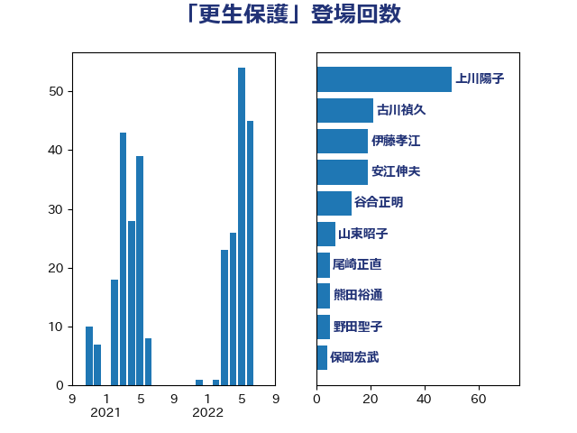

単語「更生保護」

| 上川陽子 | 自由民主党 | 50 回 |
| 古川禎久 | 自由民主党 | 21 回 |
| 伊藤孝江 | 公明党 | 19 回 |
| 安江伸夫 | 公明党 | 19 回 |
| 谷合正明 | 公明党 | 13 回 |
| 山東昭子 | 自由民主党 | 7 回 |
| 尾崎正直 | 自由民主党 | 5 回 |
| 熊田裕通 | 自由民主党 | 5 回 |
| 野田聖子 | 自由民主党 | 5 回 |
| 保岡宏武 | 自由民主党 | 4 回 |
| 山田賢司 | 自由民主党 | 4 回 |
| 津島淳 | 自由民主党 | 4 回 |
| 高木毅 | 自由民主党 | 4 回 |
| 山本香苗 | 公明党 | 3 回 |
| 日下正喜 | 公明党 | 3 回 |
| 細田博之 | 自由民主党 | 3 回 |
| 山口俊一 | 自由民主党 | 2 回 |
| 武井俊輔 | 自由民主党 | 2 回 |
| 武部新 | 自由民主党 | 2 回 |
| 田所嘉徳 | 自由民主党 | 2 回 |
| 福岡資麿 | 自由民主党 | 2 回 |
| 義家弘介 | 自由民主党 | 2 回 |
| 大口善徳 | 公明党 | 1 回 |
| 本村伸子 | 日本共産党 | 1 回 |
| 清水真人 | 自由民主党 | 1 回 |
| 渡辺猛之 | 自由民主党 | 1 回 |
| 磯崎仁彦 | 自由民主党 | 1 回 |
| 高良鉄美 | 無所属 | 1 回 |